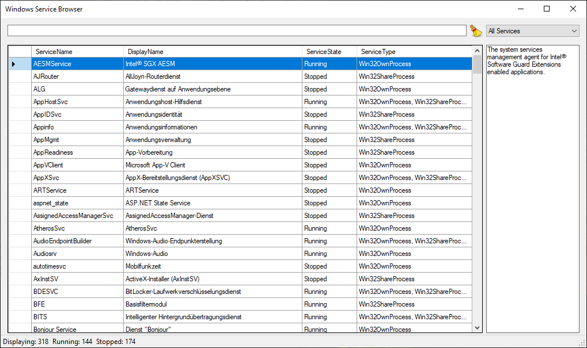

A collection of tools I developed to surpass the functionality
provided by the system tools in Windows XP or just to test some
.NET Framework APIs.
Most programs just add the ability to filter data easily. This
has been provided by newer versions of Windows out-of-the-box
though.

Windows Service Browser
Project created: 2009-06-12
This tool started as a way to display only a certain subset of the registered services in Windows.
Key enhancements are: filter functionality, service details
This tool started as a way to experiment with the registry keys for installed software in Windows.
Key enhancements are: filter functionality, software details
This tool started as a way to enhance the Windows Registry Editor to provide a list of search results
instead of jumping from search result to search result pressing F3.
Key enhancements are: search results as list